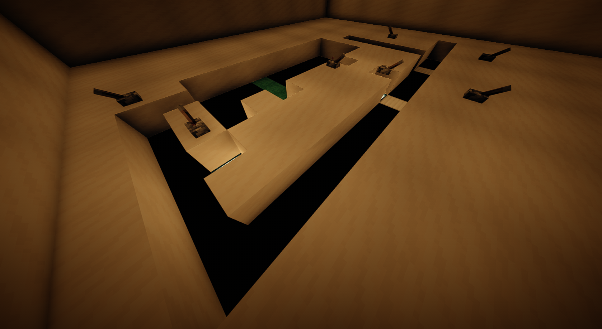

Sistema de Puertas y Ventilación
Esta instalación alberga los sistemas responsables del control de accesos y la gestión de la ventilación de Helix Prime, dos elementos fundamentales para la seguridad y el correcto funcionamiento del complejo.
El sistema de puertas supervisa todas las compuertas, accesos restringidos y barreras de contención distribuidas por las instalaciones. Desde esta sala es posible bloquear sectores completos, autorizar accesos o activar protocolos de emergencia cuando la situación lo requiere.
Además, el sistema permite aislar rápidamente áreas específicas del laboratorio para proteger al personal y mantener el control sobre los organismos en estudio.
Junto a estas funciones se encuentra el sistema central de ventilación, encargado de regular la circulación del aire, la temperatura y las condiciones ambientales de las distintas zonas del complejo.
Ambos sistemas trabajan de forma coordinada para garantizar la seguridad de Helix Prime, por lo que esta instalación permanece supervisada de manera continua por personal técnico especializado.
